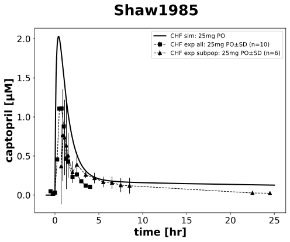

Shaw1985
Models
Datasets
- CAP25_captopril_plasma_10: Shaw1985_CAP25_captopril_plasma_10.tsv
- CAP25_concentration_renin_plasma_10: Shaw1985_CAP25_concentration_renin_plasma_10.tsv
- CAP25_captopril_plasma_6: Shaw1985_CAP25_captopril_plasma_6.tsv
Figures
- pk: Shaw1985_pk.svg
- pd: Shaw1985_pd.svg
{kind=link}
pk
|  |
pd

|
Code
../../../../experiments/studies/shaw1985.py
"""Shaw1985"""
from typing import Dict
from sbmlsim.data import DataSet, load_pkdb_dataframe
from sbmlsim.fit import FitMapping, FitData
from sbmlutils.console import console
from pkdb_models.models.captopril.experiments.base_experiment import (
CaptoprilSimulationExperiment,
)
from pkdb_models.models.captopril.experiments.metadata import Tissue, Route, Dosing, Health, Fasting, \
CaptoprilMappingMetaData, PKPDData
from sbmlsim.plot import Axis, Figure
from sbmlsim.simulation import Timecourse, TimecourseSim
from pkdb_models.models.captopril.helpers import run_experiments
class Shaw1985(CaptoprilSimulationExperiment):
"""Simulation experiment for Shaw1985.
Pharmacokinetics and pharmacodynamics of captopril in patients
with heart failure during short and long terms treatment.
- overnight fasting
"""
route = "PO"
dose = 25 # mg
yids = []
clabels = []
substances = []
cardiac_functions = {"CHF": CaptoprilSimulationExperiment.cardiac_map["Cardiac failure"]}
colors = {
"CHF": "black"
}
def datasets(self) -> Dict[str, DataSet]:
dsets = {}
self.clabels = []
self.yids = []
self.substances = []
for fig_id in ["Fig1", "Fig3"]:
df = load_pkdb_dataframe(f"{self.sid}_{fig_id}", data_path=self.data_path)
for label, df_label in df.groupby("label"):
dset = DataSet.from_df(df_label, self.ureg)
if "captopril" in label:
dset.unit_conversion("mean", 1 / self.Mr.cap)
self.yids.append("[Cve_cap]")
self.substances.append("cap")
elif "concentration_renin" in label:
dset.unit_conversion("mean", 1 / self.Mr.ren)
self.yids.append("[ren]")
self.substances.append("ren")
else:
continue
self.clabels.append(label)
dsets[f"{label}"] = dset
# console.print(dsets.keys())
# console.print(dsets)
return dsets
def simulations(self) -> Dict[str, TimecourseSim]:
Q_ = self.Q_
tcsims = {}
tc0 = Timecourse(
start=0,
end=1 * 60, # minutes
steps=400,
changes={
**self.default_changes(),
"f_cardiac_function": Q_(
self.cardiac_functions["CHF"], "dimensionless"
),
f"ren_ref": Q_(33.22, "pg/ml") / self.Mr.ren,
f"[ren]": Q_(33.22, "pg/ml") / self.Mr.ren
},
)
tc1 = Timecourse(
start=0,
end=25 * 60, # minutes
steps=400,
changes={
f"{self.route}DOSE_cap": Q_(self.dose, "mg"),
"f_cardiac_function": Q_(
self.cardiac_functions["CHF"], "dimensionless"
),
f"ren_ref": Q_(29.42, "pg/ml") / self.Mr.ren,
f"[ren]": Q_(29.42, "pg/ml") / self.Mr.ren
},
)
tcsims[f"cap_{self.route}_{self.dose}_CHF"] = TimecourseSim(
[tc0, tc1],
time_offset=-60,
)
return tcsims
def fit_mappings(self) -> Dict[str, FitMapping]:
mappings = {}
for k, dset_id in enumerate(self.clabels):
subjects = dset_id.split("_")[-1]
mappings[
f"fm_cap{self.route}{self.dose}_{self.substances[k]}_plasma_acute_fasting_{subjects}"
] = FitMapping(
self,
reference=FitData(
self,
dataset=dset_id,
xid="time",
yid="mean",
yid_sd="mean_sd",
count="count",
),
observable=FitData(
self,
task=f"task_cap_{self.route}_{self.dose}_CHF",
xid="time",
yid=self.yids[k],
),
metadata=CaptoprilMappingMetaData(
tissue=Tissue.PLASMA,
route=Route.PO,
dosing=Dosing.SINGLE,
health=Health.HEART_FAILURE,
fasting=Fasting.FASTING,
data=PKPDData.PK if self.substances[k] == "cap" else PKPDData.PD
),
)
# console.print(mappings)
return mappings
def figures(self) -> Dict[str, Figure]:
figures = {}
for fig_id, yid in zip(["pk", "pd"], ["[Cve_cap]", "[ren]"]):
fig = Figure(
experiment=self,
sid=fig_id,
name=f"{self.__class__.__name__}",
height=self.panel_height,
width=self.panel_width,
)
plots = fig.create_plots(
xaxis=Axis(self.labels["time"], unit=self.units["time"]), legend=True
)
plots[0].set_yaxis(self.labels[yid], unit=self.units[yid])
# simulation
plots[0].add_data(
task=f"task_cap_{self.route}_{self.dose}_CHF",
xid="time",
yid=yid,
label=f"CHF sim: {self.dose}mg {self.route}",
color=self.colors["CHF"],
)
for k, label in enumerate(self.clabels):
if (fig_id == "pk" and "captopril" in label) or (fig_id == "pd" and "renin" in label):
# dataset
plots[0].add_data(
dataset=label,
xid="time",
yid="mean",
yid_sd="mean_sd",
count="count",
label=f"CHF exp all: {self.dose}mg {self.route}" if "10" in label else f"CHF exp subpop: {self.dose}mg {self.route}",
color=self.colors["CHF"],
marker="s" if k == 0 or "renin" in label else "^",
)
figures[fig_id] = fig
return figures
if __name__ == "__main__":
run_experiments(Shaw1985, output_dir=Shaw1985.__name__)